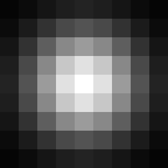

Part 1: Fun with Filters
Part 1.1: Convolutions from Scratch
Convolution flips the kernel in both directions and computes a weighted sum at each pixel. I implemented this using four loops, then two loops with NumPy handling the elementwise multiplication and sum.
Four-Loop Implementation
Two-Loop Implementation
Padding and Boundary Handling
Both implementations use zero padding and return the same image size by default. The 9×9 box filter uses four zeros on each side; the finite difference filters use one zero on each side along their filtering axis. Zero padding darkens the blurred image at the border and creates derivative responses along the frame.
Filters and Results
box = np.ones((9, 9)) / 81
Dx = np.array([[1.0, 0.0, -1.0]])
Dy = Dx.TA grayscale placeholder is used until I add a photo of myself.
The results below use the two-loop implementation. Signed derivatives are displayed on a fixed [−1, 1] scale, with zero shown as gray.


Comparison with SciPy
The reference is scipy.signal.convolve2d(image, kernel, mode="same", boundary="fill", fillvalue=0). Maximum absolute error is measured before converting the results to display images.
| Filter | Implementation | Runtime (ms) | Max Absolute Error |
|---|
The two-loop version reduces Python overhead for the box filter, while NumPy window operations cost more than the explicit loops for the small derivative kernels. SciPy runs the convolution in compiled code. All three methods use the same zero-filled boundaries.
Part 1.2: Finite Difference Operator
I convolved the grayscale cameraman image with Dx = [[1, 0, -1]] and its transpose Dy to compute the x and y partial derivatives. Dx highlights vertical edges, while Dy highlights horizontal edges.
The gradient magnitude combines both directions: magnitude = np.sqrt(dx ** 2 + dy ** 2). An edge pixel is white when its magnitude is greater than the threshold, and black otherwise.
dx = convolve2d(image, DX, mode="same", boundary="symm")
dy = convolve2d(image, DY, mode="same", boundary="symm")
magnitude = np.sqrt(dx ** 2 + dy ** 2)
edges = magnitude > thresholdThe input intensities are scaled to [0, 1]. Symmetric boundary extension avoids a strong artificial edge from padding the image with black pixels. The derivative displays use [−1, 1], with zero shown as gray. The magnitude display uses [0, √2]; thresholding uses the raw magnitude before display scaling.


Threshold Selection
I compared thresholds of 0.1, 0.2, and 0.3 and selected 0.2. The lower threshold preserves more weak edges but leaves substantial texture in the grass and background. The higher threshold removes more texture but breaks weaker portions of the subject and tripod outlines. The selected threshold retains the main silhouette and camera/tripod boundaries while suppressing some background detail. Fine texture remains because the finite difference filters also respond to noise.
Input: Berkeley assignment cameraman image.

Part 1.3: Derivative of Gaussian (DoG) Filter
I first blurred the cameraman image with a 9×9 Gaussian (σ = 2), then repeated the finite difference and gradient magnitude calculations from 1.2. The Gaussian is constructed using cv2.getGaussianKernel and the outer product of the resulting 1D kernel.
g = cv2.getGaussianKernel(size, sigma)
G = g @ g.T
blurred = convolve2d(padded_image, G, mode="same")
dx = convolve2d(blurred, DX, mode="same")
dy = convolve2d(blurred, DY, mode="same")

Derivative of Gaussian Filters
Convolving the Gaussian with each difference operator produces a DoG filter. Full convolution preserves its complete support: the x filter is 9×11, and the y filter is 11×9. Applying one DoG convolution per direction combines smoothing and differentiation.
dog_x = convolve2d(G, DX, mode="full")
dog_y = convolve2d(G, DY, mode="full")
direct_dx = convolve2d(padded_image, dog_x, mode="same")
direct_dy = convolve2d(padded_image, dog_y, mode="same")

Both DoG kernel images use the same symmetric scale: gray is zero, white is positive, and black is negative. Individual kernel cells are enlarged for visibility.
Two Convolutions vs. One DoG Convolution


The image displays use the same scales as 1.2: [−1, 1] for signed derivatives, and [0, √2] for gradient magnitude. The original image is symmetrically padded by half the Gaussian size plus one pixel. Both methods use that same extended image, and results are cropped to the original size after filtering. Cropping the blur before differentiating would introduce a different boundary condition and can break equality at the frame.
Convolution associativity gives (image * G) * Dx = image * (G * Dx), and similarly for y. The maximum absolute differences over the complete floating-point images are for x, for y, and for gradient magnitude. The binary edge maps differ at pixels. This verifies that both methods produce the same result up to floating-point rounding.
Comparison with the Finite Difference Method
Smoothing removes much of the grass texture and isolated responses visible in 1.2. The subject and tripod outlines become smoother and wider, while some fine camera details disappear. The Gaussian reduces gradient strengths, so I lowered the threshold rather than reusing 0.2. After comparing 0.05, 0.08, and 0.12, I selected 0.08: 0.05 retains more background detail, while 0.12 removes weaker parts of the camera and tripod. The selected value keeps the main outlines with little grass texture.